第3回 データの種類とデータ加⼯¶
「データの種類（尺度）とデータ加工（Data Processing）」について学びます．
🎯 到達目標¶
データ加工の必要性を説明できる。
「4つのデータ尺度」（名義尺度、順序尺度、間隔尺度、比例尺度）を区別し、それぞれに適したデータ分析のアプローチを説明できる。
複数のデータフレームを、縦に連結（concat）したり、共通のキーで横に結合（merge）して統合できる。
apply()メソッドとラムダ式（lambda） を組み合わせて、データフレームの列に対して複雑なカスタムデータ変換を行える。日付文字列を 時系列データ（datetimeオブジェクト） に変換し、曜日や月などの情報を自在に抽出・集計できる。
練習問題のGoogle Colab起動¶

上記の「Open In Colab」をクリックして、Google Colabを起動させてください
[ファイル] → [ドライブにコピーを保存] を選択して、Googleドライブにコピーを保存してください
保存が成功すると，Googleドライブの「マイドライブ」 →「Colab Notebooks」にコピーしたファイルが保存されます。
GoogleドライブにコピーしたGoogle ColabのNotebooksを開いてください
開いたGoogle ColabのNotebooksで作業をしてください
データ加工の必要性¶
世の中にあるデータは、ノイズがあったりや余分なデータが含まれていることが多い
欲しいデータが取り出しやすい形になっていない
データをある程度加工し適切なデータとなっている必要がある
{kind=link}
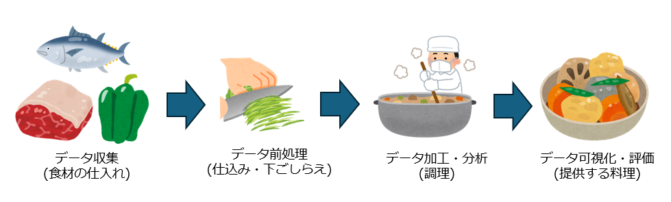
データ加工の実情¶
データ処理の中で最も時間がかかり、苦労するタスクがデータ前処理だといわれている
諸説あるが、一般的に70％から80％のタスクがデータ前処理作業だといわれている
データ前処理には、データのクリーニング、データの変換、データの結合、データの集約などがある
データ前処理の出来上がりによって、後処理の結果が大きく変わることもある
{kind=link}
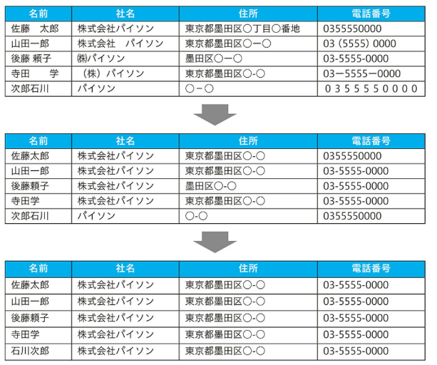
データ加工のイメージ (汚いデータを何回か加工をしてきれいにしていく)
データの「尺度（データ型）」¶
データ分析を行う前に、「そのデータがどういう性質のものか」を見極める必要があります。 これを統計学では「4つの尺度（測定尺度）」と呼びます。データのもつ性質や情報量を分類する基準であり、 名義尺度・順序尺度・間隔尺度・比例尺度の4種類があります。下位から上位へ行くほど情報量が豊かになり、 扱える統計的処理の範囲が広がります。
【4つの尺度のビジュアル図解】
[ 4つの尺度 ]
├── 1. 名義尺度 (分類のみ) ──▶ 「コーヒー」「紅茶」（足し引きできない）
├── 2. 順序尺度 (順番に意味) ──▶ 「大・中・小」「顧客満足度：1〜5」（差は不均等）
├── 3. 間隔尺度 (ゼロに意味なし) ──▶ 「気温（℃）」（0度は『温度がない』ではない）
└── 4. 比例尺度 (絶対的なゼロ) ──▶ 「価格（円）」「来客数」（0は『存在しない』。2倍が計算できる）
4つの尺度の特徴と具体例
質的変数：離散的な値をとり、数値で表現できない変数
名義尺度（Nominal Scale）：
特徴: 同じか違うか（区別）の区別しか意味を持たず、大小関係や順序はありません。計算はできません。
使える統計量: 度数、最頻値（さいひんち）
具体例: 性別、血液型、背番号、都道府県名、商品カテゴリ（ドリンク、フード）、性別、店舗名
順序尺度（順位）（Ordinal Scale）：
特徴: 分類に加えて、値の大小・順位関係に意味がありますが、数値の「差」の大きさに等間隔の意味はありません（「差」が均等でない）。
使える統計量: 中央値、四分位数、順位相関係数
具体例: 満足度調査（5段階評価）、順位（1位、2位、3位），顧客満足度（5:大満足、4:満足...）、コーヒーのサイズ（S, M, L）。「SとMの差」と「MとLの差」は同じとは限りません。
量的変数：数や量で測れる変数
間隔尺度（差）（Interval Scale）：
特徴: 大小関係と値の「差」に意味がありますが、基準となる「0（ゼロ）」は便宜的なものであり、本当のゼロ（無）ではありません（負の値も取ります）。倍率の計算（比）はできません。「0（ゼロ）」が絶対的な無を意味しないデータです。
使える統計量: 平均値、標準偏差
具体例: 摂氏温度（℃）、西暦、偏差値、気温（℃）。「30℃は15℃の2倍暑い」とは言えません（0℃は熱が完全に無い絶対零度ではないため）
比例尺度（Ratio Scale）：
特徴: 数値の「差」にも「比」にも意味があります。差の計算に加え、絶対的な「0（ゼロ）」が存在し（何もない状態）、値の比率（〜倍）に意味を持ちます。もっとも情報量が多い尺度です。「0」は「何もない」ことを示します。データ分析で最も扱いやすい形です。
使える統計量: 幾何平均、変動係数、比率
具体例: 身長、体重、値段、距離、価格、売上数、客数。「0円」はタダ（お金がない）ですし、「1000円は500円の2倍」と言えます。
Pandasでデータを加工するときは、この尺度が「文字列（object）」、「カテゴリ（category）」、「数値（int/float）」のどのデータ型に変換すべきかを意識します。
EDA（Exploratory Data Analysis）¶
EDAとは？¶
EDAは「Exploratory Data Analysis」の略
日本語では「探索的データ分析」と呼ばれている
EDAは、データの特徴や構造を理解し、仮説を生成、検証するための一連の手法
データを探索し、視覚化や統計を活用してデータの特徴や傾向を理解する
EDAの主な目的¶
データの全体像を把握する
変数間の関係性を明らかにする
異常値や欠損値を発見する
データの質を評価する
仮説を生成し検証する
EDAは、データクリーニング、データ変換、統計的分析、可視化など、多岐にわたる手法を組み合わせて行われいる
他のデータ分析手法と比べ、EDAは特に探索的な性質が強く、データの “理解” に重点を置いている
主なライブラリ¶
主なライブラリ¶
主なライブラリの機能
{kind=link}
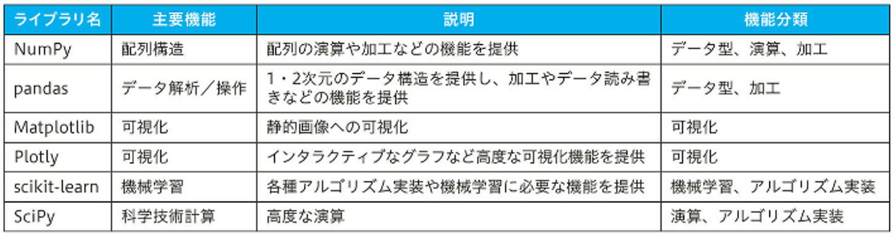
主なライブラリ - NumPy¶
配列構造をデータ型と提供し、数値演算や可能の機能を持つ
Pythonにおけるデータ分析の基礎となるライブラリ
{kind=link}
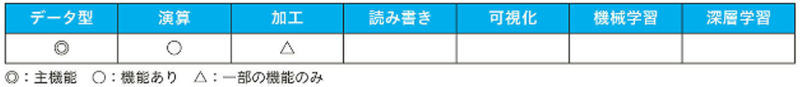
主なライブラリ - pandas¶
データ加工ライブラリとして、1・2次元のデータ構造を提供する
データ加工やデータ読み書きなどの豊富な機能を持ち
Pythonでデータ分析を行うときにもっとも使われるライブラリ
{kind=link}
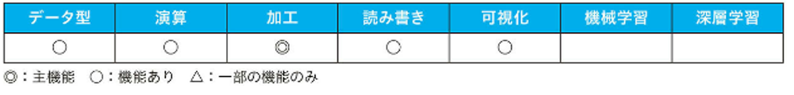
主なライブラリ - Matplotlib¶
Pythonの可視化ライブラリで、グラフを描画する
{kind=link}
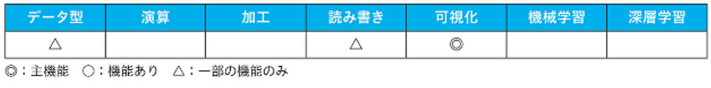
主なライブラリ - Plotly¶
インタラクティブなグラフ描画を得意とする可視化ライブラリ
{kind=link}
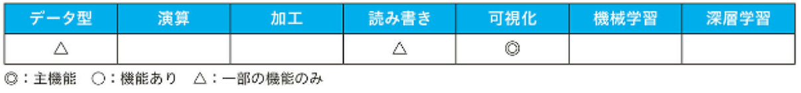
主なライブラリ - scikit-learn¶
オープンソースの機械学習ライブラリ
機械学習ならscikit-learnからはじめるのがおススメ
{kind=link}
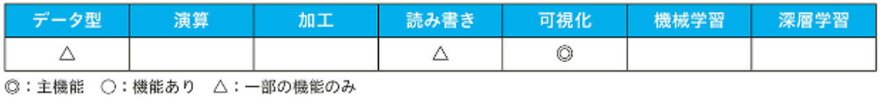
主なライブラリ - SciPy¶
科学技術計算ライブラリ
微分方程式の数値解析やフーリエ変換など演算・計算をサポート
{kind=link}
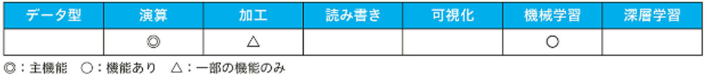
代表的なデータ形式¶
データ形式 - 表形式¶
データを整理する際に最も使われる形式
データを行と列の2次元で管理する方法。テーブル形式とも呼ばれる。
Microsoft Excelなどの表計算ソフトで扱うデータのイメージ
pandasのDataFrame形式で扱う
{kind=link}
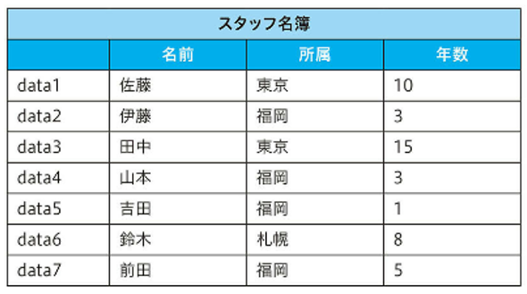
表形式の例
データ形式 – ツリー形式¶
データを親子関係で管理する方法
列方向という概念はない
PCのフォルダでファイルを管理するイメージ
JSON形式で扱う
{kind=link}
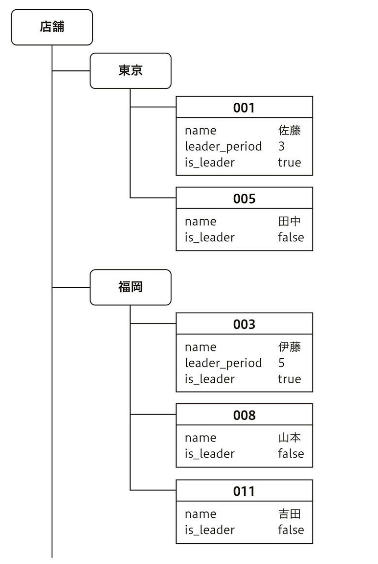
ツリー形式の例
データ形式 – リレーション形式¶
リレーショナルデータベース(RDB)で扱うデータ
表形式の2次元のデータと関連性をもつ
複数の表を関連させて、複雑なデータを表現
{kind=link}
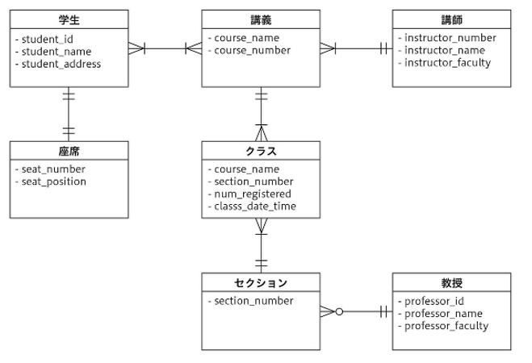
リレーション形式の例
データ形式 – グラフデータ¶
データを点と線で表現をする
点を「ノード(点)」「エッジ(線)」「プロパティ(属性)」の3つで表現
データ間の関係性の構造を持つ
プロパティはグラフの各要素（ノード、エッジ）が持つ情報
{kind=link}
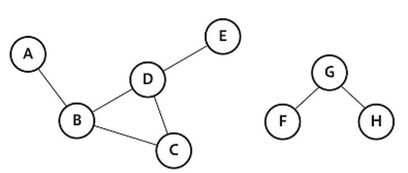
グラフデータの例
データ形式 – 文書データ¶
文章のテキスト形式のデータ
文字の羅列や定型フォーマットなど，自由に作成されている
人間が読みやすい形式となっている
お打ち合わせのお願い
お客様各位
〇〇株式会社
〇〇様
いつもお世話になっております。
株式会社〇〇の〇〇です。
このたび、〇〇に関するご提案について、ぜひ一度お打ち合わせの機会をいただきたく、ご連絡いたしました。
：
：
サンプル文章
ファイルのデータ形式¶
Pythonのファイルのデータ形式¶
Pythonには多くのデータ形式に対応する
pandasは多くのデータ形式の読み書きが可能で、データ分析へ活用することが可能
代表的なデータ(ファイル形式) ・CSV形式 ・HTML形式 ・画像データ ・pickle形式 ・Excel形式 ・XML形式 ・音声データ ・parquet形式 ・JSON形式 ・文書データ ・RDBデータ
CSV形式¶
CSVは「Comma Separated Values（カンマ区切りバリュー）」の略
CSV形式は、カンマ（,）で列を区切り、改行コードで行を区切るデータ形式
2次元の表形式のデータをテキストで表す
テキストファイルとして扱え汎用的で多くの場面で使われるデータ形式
"表章項目","人口","概算値","全国","時間軸（年月日現在）","年齢5歳階級","/男女別","男女計","男","女"
"人口【万人】","総人口","概算値","全国","2021年12月","総数","","12,547","6,099","6,448"
"人口【万人】","総人口","概算値","全国","2021年12月","0～4歳","","437","224","214"
"人口【万人】","総人口","概算値","全国","2021年12月","5～9歳","","503","258","245"
"人口【万人】","総人口","概算値","全国","2021年12月","10～14歳","","535","274","261"
"人口【万人】","総人口","概算値","全国","2021年12月","15～19歳","","559","287","272"
:
※1 データ
「政府統計の総合窓口 e-Stat」「人口推計」データ
https://www.e-stat.go.jp/stat-search/files?page=1&toukei=00200524&tstat=000000090001
CSV形式 - open()¶
open()関数とfor文でデータを1行ずつ読み込む
with open("data/FEH_00200524_230205124938.csv", "r", encoding="cp932") as f: ←①
for i, row in enumerate(f): ←②
for col in row.strip().split(","): ←③
print(col, end="|") ←④
print()
print("===")
if i > 1: ←⑤
break
① open()関数のキーワード引数でencoding="cp932"と与えている
サンプルのCSVファイルの文字エンコーディングが、Python標準で使うUTF-8ではなく、CP932（Shift-JISの拡張）
なので文字エンコーディングを指定
② 読み込んだテキストファイルを1行ずつ取り出す
③ カンマ（,）で分割
④ パイプ|で区切って出力
⑤ CSVファイルの先頭3行を出力するように指定
出力
"表章項目"|"人口"|"概算値"|"全国"|"時間軸（年月日現在）"|"年齢5歳階級"|"/男女別"|"男女計"|"男"|"女"|
===
"人口【万人】"|"総人口"|"概算値"|"全国"|"2021年12月"|"総数"|""|"12|547"|"6|099"|"6|448"|
===
"人口【万人】"|"総人口"|"概算値"|"全国"|"2021年12月"|"0～4歳"|""|"437"|"224"|"214"|
===
文字コード¶
文字コードは、コンピュータが文字を正しく認識・処理するために欠かせない「文字と数字の変換ルール」
コンピュータは、0と1の数字しかわからない
言語などにより複数の変換ルールがある
例：
日本語：「41」は「あ」
英語： 「41」は「A」
文字コードが違うと、正しい文字が表示されず、意味不明な記号になる
文字化けを防ぐためには、データの作成時と読み込み時で同じ文字コードを使用することが非常に重要
日本語の文字コードである「Shift_JIS (cp932)」と「UTF-8」¶
Shift_JIS (cp932)
Shift_JISは主にWindowsやmacOSの古いバージョンでの日本語の標準文字コード
Windowsでは後方互換性の為にまだ有効となっている
cp932（Code Page 932）: Shift_JISの中でMicrosoftが独自に拡張したもの
NEC特殊文字、IBM拡張文字、外字領域などが含まれており、Shift_JISとほぼ同じ意味で使われている
CSV形式はMs-Excelのからの流れでShift_JISのデータが多い
UTF-8
UTF-8は、現在インターネットや多くのシステムで世界標準となっている文字コード
世界中のほとんどの文字（アルファベット、日本語、中国語、アラビア語など）が扱える
Shift_JISとは異なり、どの文字もバイト列の先頭から判別できる仕組みになっている
UTF-8のファイルには、「BOM付き」と「BOMなし」の2種類がある
BOMは「Byte Order Mark（バイト・オーダー・マーク）」の略で、ファイルの先頭に付けらて「このファイルはUTF-8で書かれていますよ」という目印が付与される場合がある
プログラミングの世界では「BOMなし」と「BOM付き」のファイルもある
新しいウェブサイトやプログラムは今ではUTF-8が世界的に標準となっている
CSV形式 - pandas¶
pandasでCSV形式のファイルを読み込むにはread_csv()関数を利用する
読み込んだデータはDataFrameになる
import pandas as pd
df = pd.read_csv("data/FEH_00200524_230205124938.csv", encoding="cp932")
データが適切に読めていることを確認するときに、head()メソッドやtail()メソッドがよく使う
df.head()

データの行と列を確認
df.shape

Excel形式¶
Microsoft Excel (拡張子.xlsx)は表形式のデータをシートとし、複数のシートをブック形式で扱うデータ形式
内部的にはXMLファイルをZIP圧縮したファイル
CSV形式のデータとは異なり、セルごとに色や表示形式などの書式を設定でき複雑な表現ができるデータ形式です
import pandas as pd
df = pd.read_excel(“data/FEH_00200524_230205132438.xlsx”, header=12, nrows=27, )
read_excel()関数の主なキーワード引数
引数名 |
説明 |
|---|---|
sheet_name |
シート名またはシートのインデックス番号を指定。リストで複数のシートを指定することも可能。 デフォルトでは0となっているので、最初のシートが読み込まれる。 |
header |
列名に使うヘッダ行を0から始まるインデックス番号で指定。 デフォルトは0。 |
nrows |
読み込む行数を指定。デフォルトはNoneで、すべての行を読み込む。 |
skiprows |
読み込みをスキップする行の0から始まるインデックス番号のリストで指定、もしくは最初の何行を読み飛ばすかを整数で指定。デフォルトのNoneで、スキップしない。 |
index_col |
DataFrameのIndexに使う列を指定。0から始めるインデックス番号で指定。デフォルトのNoneで、インデックス指定なし |
usecols |
読み込む列を列名または列の0から始まるインデックス番号のリストを指定。デフォルトのNoneで，すべての列を読み込む。 |
JSON形式¶
JSON形式のデータは、JavaScriptのオブジェクトを文字列表現したテキストファイル
JavaScriptの文字列や数値を、配列やオブジェクトとして表現できる形式で、構造化したデータを扱える
階層があるツリー構造などをテキストファイルに書き出せる
JSONのデータをjsonライブラリのload()関数を使い読み込む。dict形式で読み込まれる
import json
with open("data/population-202302.json", "r") as f:
data = json.load(f)
JSONファイル
{
"GET_STATS_DATA": {
RESULT": {
"STATUS": 0,
"ERROR_MSG": "正常に終了しました。",
"DATE": "2023-02-05T22:36:51.330+09:00"
},
"PARAMETER": {
"LANG": "J",
"STATS_DATA_ID": "0003443838",
"DATA_FORMAT": "J",
:
}
}
}
json_normalize関数：JSONデータをフラットなテーブル形式（DataFrame）に正規化する機能
HTML形式¶
HTML (Hyper Text Markup Language)形式とは 主にWebページ作成に用いられる
文字の装飾（色、サイズ、フォント）や、画像、動画などの配置して Webサイトを表現するために作られたフォーマット
HTMLデータは、タグ(<>)で囲われたデータ構造のマークアップ言語でテキストファイル1である
HTMLファイル
<!DOCTYPE html>
<html lang="ja">
<head>
<title>ホームページ</title>
:
</head>
<body>
本文
:
</body>
</html>
XML形式¶
XML（Extensible Markup Language）形式とは、データを構造化し、人間と機械の両方が理解できるテキスト形式で表現するマークアップ言語
定義されたタグ(<>)を用いてデータの意味や関係性を明確に示せる
HTML形式とマークアップ言語という共通点があるが、目的が異なる
HTMLは「ウェブページを美しく表示する」ための言語であり、XMLは「データを効率的にやり取りする」ための言語
XMLファイル
<?xml version="1.0" encoding="UTF-8"?>
<library>
<book id="bk101">
<title>タイトル</title>
<author>著者</author>
<description>説明</description>
</book>
</library>
文書データ¶
文書データは、人が読むための文章（テキスト）情報のファイル
Microsoft WordやPDFのようなアプリケーションで作られたファイルは「バイナリ形式」である
メモ帳のようなテキストエディタで読み書き可能なものを「テキスト形式」または「テキストファイル」と呼ぶ
テキスト形式 (Text Format)は、人間が読める文字で構成されている
バイナリ形式 (Binary Format)は、コンピュータが効率的に処理できるように数字データで構成されている。表示用のアプリケーションでしか表示できない
文書データ（テキスト形式）ファイル
購入リスト
・牛乳
・パン
・卵
・りんご
文書データ（バイナリ形式）ファイル
アプリケーションで表示

実際のファイルの内容

画像データ¶
画像データは、JPEGやPNGなどの画像のファイル形式
バイナリ形式のファイル
RGB（光の三原色：赤緑青）やCMYK（印刷用途：シアン、マゼンタ、イエロー、ブラック）などの色を表す数値や形状の情報を持っている
画像データ

音声データ¶
音声データとは、音をデジタル化して保存・再生するためのバイナリ形式のデータ
音楽やポッドキャスト、電話の録音、ボイスメモなどは音声データ
音のアナログな波をコンピュータで扱えるように、デジタル化として、「サンプリング（標本化）」し「量子化」したデータ
アナログ波形

デジタルデータ(量子化)

RDBデータ¶
RDBデータ（リレーショナルデータベース(Relational Database)）は、データを「テーブル」と呼ばれる表形式のデータを複数のテーブルを関連付けて（リレーションさせて）データを扱うデータベースの形式
バイナリ形式のデータ
テーブルデータ

テーブルデータの関係図(ER図)

pickle形式¶
pickle形式は、Pythonのオブジェクトをそのままファイルに書き出せるPython専用の形式
Pythonのオブジェクトをストレージに保存したり、データのやりとりに使える。
Pythonオブジェクトそのものを保存
バイナリ形式のデータ
parquet形式¶
parquet形式は、Apache Parquetプロジェクトのデータ形式
表形式データを効率よく読み書きして高い圧縮率で保存できるデータ形式
Python以外にも、JavaやC++やRなど多くのプログラミング言語で利用可能
バイナリ形式のデータ
pickle形式との違いは、pickle形式はPythonのオブジェクトをそのままバイナリ化したものでPythonでのみ利用可能
parquet形式はデータ仕様に基づいて効率的にしたデータで汎用性がある
pickle形式とparquet形式

データの連結／結合¶
DataFrameのデータの連結／結合方法
複数のデータを1つにまとめる
concat, join, merge関数を使う

DataFrameの連結¶
「連結」とはデータを行（縦）方向または列（横）方向に接続する処理を指す
行方向の連結はDataFrameに行を追加
列方向の連結はDataFrameに列を追加
行(縦)方向の連結

DataFrameの結合¶
「結合」とはキーを持つデータから特定のキーをもとに要素を取り出し、結合する処理を指す
結合処理はマージ処理とも呼ばれる
結合した結果、キーに該当する要素が存在しない場合は、欠損値として扱われる

concat()関数によるDataFrameの連結¶
concat()関数は、第1引数に渡したリストに含まれたDataFrameを連結して返す
引数axisに0を渡すと行方向（デフォルト）に連結する
引数axisに1を渡すと列方向列方向に連結する
ignore_index=Trueを指定すると元のDataFrameのインデックスを無視して0から始まる連番に振り直す
ignore_index=Trueを指定しない場合は、結合されたDataFrameのインデックスは元のDataFrameのものが維持される

concat()関数によるDataFrameの結合¶
concat()関数を実行してDataFrameを列方向に結合する場合は、引数axisに1を渡す
インデックスがキーになる
デフォルトの結合方法は、外部結合（"outer"）
inner：内部結合 結合対象のキーがすべて存在する要素を結合
outer：外部結合 結合対象のすべての要素を結合
内部結合する場合は、concat()関数の引数joinに“inner”を渡す

join()メソッドによるDataFrameの結合¶
DataFrameのjoin()メソッドの引数に、結合対象のDataFrameを渡し、2つのDataFrameを結合して返す
join()メソッドの結合方法はデフォルトで左外部結合（"left"）結合方法は引数howで指定
left：左外部結合 結合元の結合対象のキーが存在する要素を結合
right：右外部結合 結合先の結合対象のキーが存在する要素を結合
inner：内部結合
outer：外部結合

merge()関数によるDataFrameの結合¶
merge()関数の第1引数（left）および第2引数（right）を結合して返す
デフォルトで内部結合（“inner”）。結合方法は引数howで指定
left：左外部結合
right：右外部結合
inner：内部結合
outer：外部結合
merge()関数は、デフォルトでは引数onに渡した列をキーとして結合する

重複したキーの検証¶
merge()関数の引数validateに“one_to_one”を渡すと、キーの値が1：1であることを検証する
重複があるとMergeError例外が送出される
merge()関数の引数validateに“one_to_many”を渡すと、キーの値が1：n（マージ元のキーが一意）であることを検証する
例）one_to_one
pd.merge(df1, df5, on="A", validate="one_to_one")
例）one_to_many
pd.merge(df1, df5, on=“A”, validate="one_to_many" )
近い値での結合¶
merge_asof()関数は、引数onで指定した列の値が近い要素を結合
引数toleranceに結合するための公差（基準値と許容される範囲の最大値と最小値の差）を指定
pd.merge_asof(
ts_df1,
ts_df2,
on="timestamp",
tolerance=pd.Timedelta("2s"),
)
「timestamp」列から2秒以内の値の要素を結合したDataFrameを生成している
DataFrame結合時の関数／メソッドの選び方¶
concat()関数、join()メソッド、merge()関数は、DataFrameの構造や結合条件に応じて使い分ける
concat()関数
DataFrameのインデックスがキーとして使える場合は、concat()関数を検討する
インデックスをキーとすることで、高速な処理が期待できる
concat()関数に渡すリストには3つ以上のDataFrameを入れられるため、多数のデータをまとめて処理する場合にも使える
join()メソッド
DataFrameのインデックスがキーとして使え、より複雑な条件で結合処理をする場合はjoin()メソッドを検討する
キーが列とインデックスの組み合わせの場合もjoin()メソッドが使える
merge()関数
DataFrameの列をキーとして結合する場合は、merge()関数が使える
データの変形¶
ピボットとアンピボット¶
ピボットは、表形式データの列の値に基づいてデータを再形成する処理
アンピボットは、ピボットされたデータを解除する処理
「名前」を行にとり、「科目」を列にとって変形した処理が「ピボット」になり、その逆の処理が「アンピボット」になる

ピボット¶
ピボット処理は、pivot()メソッドやpivot_table()メソッドで行う
crosstab()関数は、pivot_table()メソッドと同様の処理を行える
引数index、columns、valuesにarray-likeを渡すことで集計する
data（第一引数）: 元データのpandas.DataFrameオブジェクトを指定
index: 元データの列名を指定。結果の行見出しとなる
columns: 元データの列名を指定。結果の列見出しとなる
引数aggfuncを省略すると、平均値（numpy.mean）を算出する
引数aggfunc=“median”は中央値を算出する
引数aggfunc=“count”はデータ個数を数え上げる
引数marginsをTrueとすると、各カテゴリごとの結果（小計）および全体の結果（総計）が算出できる
crosstab()関数を使うとクロス集計分析ができる
normalize=True を指定すると、クロス集計結果が全体の合計値が1になるように規格化（正規化）される
アンピボット¶
アンピボットは、ピボットされたデータを解除する処理
ピボットされたデータをアンピボットするには、DataFrameからmelt()メソッドで実行する
melt()メソッドの引数
引数名 |
説明 |
|---|---|
id_vars |
列として識別する列名 |
value_vars |
ピボットを解除する列名、指定しない場合はすべての列に使用する |
var_name |
value_varsにつける列名 |
value_name |
値の列につける列名、省略すると"value"が付けられる |
スタックとアンスタック¶
スタックは、複数列から構成されるデータを1次元に積み上げる処理
アンスタックは、階層化されたインデックスを列に展開する処理
スタックしたデータはアンスタックすると、元のデータに戻る

スタック
データをスタックするには、DataFrameのstack()メソッドを実行する
列名が各要素のインデックスになり、元のインデックスを親階層に持つMultiIndexになる
アンスタック
データをアンスタックするには、DataFrameのunstack()メソッドを実行する
MultiIndexのスタック・アンスタック¶
DataFrameをグループ化し、MultiIndexを持つDataFrameを生成
groupby_time = tips.groupby("time")[ # ①time列でグルーピング
# ①グループ化したオブジェクトから列を選択
["total_bill", "tip"]
].agg(
("mean", "median")
) # ①平均値と中央値を算出
groupby_time.columns.names = (
"value",
"agg",
) # ②インデックスに名前を設定
groupby_time

①の処理では、DataFrameを「total_bill」列と「tip」列でグループ化し、平均値と中央値を算出している
②の処理では、MultiIndexの各階層に名前を付けている。
ダミー変数¶
ダミー変数とは、カテゴリーデータ（質的変数）をTrue（1）または False（0）の2値に変換した変数
ダミー変数はカテゴリー数に応じて増加し、pandasから利用する場合は各変数が列に展開される
機械学習などのフレームワークやライブラリ（scikit-learnなど）によっては、カテゴリーデータをダミー変数に変換して入力する
get_dummies()関数は、カテゴリーデータをダミー変数に変換する
データの分類


要素の展開¶
explode()メソッドは、ネストされた（各要素がリストやタプルなどの複数要素を持つ）データを展開して1次元のデータに変換する

カテゴリーデータ¶
カテゴリーデータの処理¶
質的変数をcategory型で処理すること
カテゴリー上は存在するが、データには存在しない値の処理が行える
順序尺度の処理（比較、ソートなど）が行える
グループ化処理が高速化する
尺度水準¶
データは、質的変数（カテゴリー変数）、量的変数（連続変数）に分類される
データの分類
カテゴリーデータの生成¶
SeriesおよびDataFrameで、引数dtypeに“category”を渡すことで、category型を生成できる
「非常に満足、満足、普通、不満、非常に不満」の5段階の満足度を示す、category型のSeries「survey_ser」を生成
import pandas as pd
survey_data = [
"満足",
"普通",
"普通",
"非常に不満",
"不満",
]
survey_ser = pd.Series(survey_data, dtype="category")
survey_ser
0 満足
1 普通
2 普通
3 非常に不満
4 不満
dtype: category
Categories (4, object): ['不満', '普通', '満足', '非常に不満']
カテゴリーデータへの型変換¶
Seriesをcategory型に変換するには、astype()メソッドの引数に“category”を渡して実行する
pd.Series(survey_data).astype("category").dtype
CategoricalDtype(categories=['不満', '普通', '満足', '非常に不満'], ordered=False)
カテゴリーデータの順序付け¶
survey_serをsort_values()とし、ソートすると、str型と同じ基準でソートされる
survey_ser.sort_values()
4 不満
1 普通
2 普通
0 満足
3 非常に不満
dtype: category
Categories (4, object): ['不満', '普通', '満足', '非常に不満']
value_counts()メソッドでカテゴリーごとの度数を集計
survey_ser.value_counts()
普通 2
不満 1
満足 1
非常に不満 1
Name: count, dtype: int64
CategoricalDtypeクラスは、あらかじめカテゴリーを設定し、さらに順序付けできるcategory型を定義できる
引数categoriesにカテゴリー変数となる一意でかつNULL値を含まないシーケンス型を渡す
引数orderedにTrueを渡すことで、カテゴリーを引数categoriesの要素の順序で順序付けが可能となる
rating = pd.CategoricalDtype(
categories=[
"非常に不満",
"不満",
"普通",
"満足",
"非常に満足",
],
ordered=True,
)
new_survey_ser = pd.Series(survey_data, dtype=rating)
new_survey_ser
0 満足
1 普通
2 普通
3 非常に不満
4 不満
dtype: category
Categories (5, object): ['非常に不満' < '不満' < '普通' < '満足' < '非常に満足']
.cat.ordered属性から、順番が設定されているかを確認できる
new_survey_ser.cat.ordered
True
sort_values()メソッドの実行結果から、カテゴリーを設定した順序でソートされたことが確認できる
new_survey_ser.sort_values()
3 非常に不満
4 不満
1 普通
2 普通
0 満足
dtype: category
Categories (5, object): ['非常に不満' < '不満' < '普通' < '満足' < '非常に満足']
順序付けされたカテゴリーデータは、min()メソッドでカテゴリーの先頭を取り出し、max()メソッドでカテゴリーの末尾を取り出せる
value_counts()メソッドで集計した場合に、データが存在しないカテゴリーは度数が0となる
describe()メソッドを実行すると、category型に適した記述統計量が算出される
カテゴリーのインデックス（数値）を取得するには、.cat.codes属性にアクセスする
欠損値（NaN）が含まれたカテゴリーは、カテゴリーのインデックス値が-1になる
データの離散化によるカテゴリーデータの生成¶
cut()関数、qcut()関数は量的変数を離散化し、質的変数（カテゴリーデータ）に変換する
第1引数xには、データとなる配列を渡し、引数binsにはビン（区間のしきい値）の数を定義する
返り値はcategory型になり、順序付けされる
rng = np.random.default_rng(1)
score = rng.integers(low=0, high=100, size=10)
satisfaction = pd.cut(
score,
bins=[0, 20, 40, 60, 80, 101], # ①
right=False, # ②
labels=[
"非常に不満",
"不満",
"普通",
"満足",
"非常に満足",
], # ③
)
survey_df = pd.DataFrame({"satisfaction": satisfaction, "score": score})
survey_df
コードでは、cut()関数を利用して、満足度を示す1から100までの数値（「score」列）と、これを5段階に分割したデータ（「satisfaction」列）を列としたDataFrame（survey_df）を生成する

pandas.qcut関数とpandas.cut関数¶
連続的なデータを離散的なビン（区間）に分割するための2つの重要な関数、qcut と cut がある
qcut関数：指定した数だけデータを等分する
cut関数：指定した領域ごとにデータを分割する
| 特徴 | pandas.cut | pandas.qcut |
|---|---|---|
| 分割基準 | 等間隔または指定された境界 | 各ビンに均等なデータ数が含まれるように |
| ビンのサイズ | 各ビンの幅がほぼ等しい | 各ビンのデータ数がほぼ等しい |
| ビンの境界 | ユーザーが指定、または自動的に等間隔に決定 | データの分布に基づいて自動的に決定 |
| 使いどころ | 事前に決まったルールでデータを分類したい時 | データの分布が偏っている時に、均等なサイズのグループを作りたい時 |
https://pandas.pydata.org/docs/reference/api/pandas.qcut.html
https://pandas.pydata.org/docs/reference/api/pandas.cut.html
.cat アクセサ¶
Seriesには、アクセサと呼ばれる、各要素に簡潔にアクセスできる仕組みがある。
.catアクセサは、category型の要素にアクセスするアクセサ
category型の順序付けを解除するには.cat.as_unordered()メソッドを実行する
順序を指定するには.cat.as_ordered()メソッドを実行する
unordered_satisfaction = survey_df.loc[:, "satisfaction"].cat.as_unordered()
unordered_satisfaction.cat.as_ordered()
CategoricalIndex¶
CategoricalIndexは、CategoricalDtype型のインデックス
インデックスに重複した要素を持つデータをカテゴリー化することで、重複したインデックスを効率よく処理できる
順序付けされたcategory型を利用することで、インデックスからソートした場合にカテゴリーの順序でソートできる
new_survey_df = survey_df.set_index("satisfaction")

カテゴリーデータの結合¶
類似した複数のカテゴリーデータを統合する場合がある
カテゴリーデータを結合するには、union_categoricals()関数を実行する
引数にカテゴリーデータを要素にしたリストを渡す
順序付けされたカテゴリーデータのすべての要素が合致しない場合は、TypeError例外を送出してエラーになる
union_categoricals()関数の引数ignore_orderにTrueを渡し、順序付けをしないカテゴリーデータにすることで結合できる
ordered_cat1 = pd.Categorical(
[
"普通",
"満足",
"非常に満足",
],
ordered=True,
)
ordered_cat2 = pd.Categorical(
[
"非常に不満",
"不満",
"普通",
],
ordered=True,
)
union_categoricals([ordered_cat1, ordered_cat2], ignore_order=True,)
['普通', '満足', '非常に満足', '非常に不満', '不満', '普通’]
Categories (5, object): ['普通', '満足', '非常に満足', '不満', '非常に不満']
データのグループ化¶
データのグループ化¶
データによっては、分類して集計する場合がある
たとえば、学力テストの点数が学年や学級に分類されているケースが挙げられる
データをカテゴリーごとにグループ化し、グループ化されたデータを処理する方法について解説する
GroupByオブジェクト¶
SeriesおよびDataFrameのgroupby()メソッドを実行すると、SeriesGroupByオブジェクトおよびDataFrameGroupByオブジェクトを生成する
import pandas as pd
tips = pd.read_csv(
"https://raw.githubusercontent.com/plotly/datasets/master/tips.csv",
dtype={
"sex": "category",
"smoker": "category",
"day": "category",
"time": "category",
},
)
tips_groupby_time = tips.groupby("time")

データの集約¶
GroupByオブジェクトから、記述統計量などを算出するメソッドを実行すると、グループごとの算出結果を返す
数値データの列だけを集約するには、引数numeric_onlyにTrueを渡す
GroupByオブジェクトの代表的な集約メソッド
| メソッド | 機能概要 |
|---|---|
| mean() | 平均 |
| sum() | 合計 |
| size() | 行数（データ数） |
| count() | 欠損値を除いた度数 |
| nunique() | 一意の要素数 |
| std() | 標準偏差 |
| var() | 分散 |
| sem() | 標準誤差 |
| describe() | 要約統計量 |
| first() | 最初の値 |
| last() | 最後の値 |
| nth() | n番目の値 |
| min() | 最小値 |
| max() | 最大値 |
GroupByオブジェクトのフィルタリング¶
GroupByオブジェクトのfilter()メソッドの引数にbool型を返す関数を渡すことで、グループ化したデータに対してフィルタリングを行える
over3 = tips.groupby("day").filter(lambda x: x["tip"].mean() > 3)
「day」列でグループ化し、この中から「tip」列の平均値が3より大きいデータを抽出

GroupByオブジェクトのデータの可視化¶
GroupByオブジェクトには、グループ化したデータを可視化するメソッドが用意されている
tips.groupby("time").boxplot();
tipsを「time」列でグループ化し、GroupByオブジェクトのboxplot()メソッドを実行して箱ひげ図を描画している

データの連結（concat）と結合（merge）¶
複数のバラバラの表を1つに統合する
表を縦につなげる「連結（pd.concat）」¶
例えば、「月曜日の売上表」と「火曜日の売上表」のように、「同じ項目の表を、縦に単純に繋げたい」ときは、pd.concat() を使います。
【連結（concat）のイメージ】
[ 月曜の表 ]
│ A店 │ 10万円 │
│ B店 │ 8万円 │
+
[ 火曜の表 ]
│ A店 │ 12万円 │
│ B店 │ 9万円 │
↓
concat
↓ (縦に繋がる！)
│ A店 │ 10万円 │
│ B店 │ 8万円 │
│ A店 │ 12万円 │
│ B店 │ 9万円 │
import pandas as pd
# 月曜日の売上
df_monday = pd.DataFrame([
["A店", 100000],
["B店", 80000]
], columns=["店舗名", "売上"])
# 火曜日の売上
df_tuesday = pd.DataFrame([
["A店", 120000],
["B店", 90000]
], columns=["店舗名", "売上"])
# 縦に連結（リストに入れて渡します。ignore_index=True をつけると、インデックス番号が0,1,2,3と綺麗に振り直されます）
df_all = pd.concat([df_monday, df_tuesday], ignore_index=True)
print("縦に連結した売上データ")
display(df_all)
共通のキーでつなげる「結合（pd.merge）」¶
例えば、「売上データ」に「各店舗の住所や店長名」が載っている「店舗マスタ」を合体させたいとき、共通するキーワード（この場合は「店舗名」）を軸にして横に合体させるのが pd.merge() です。これはエクセルでいう VLOOKUP関数 の動きをします
【結合（merge）のイメージ】
[ 売上表 ]
│ 店舗名 │ 売上 │
│ A店 │ 10万円 │
│ B店 │ 8万円 │
+
[ 店舗マスタ ]
│ 店舗名 │ エリア │ 店長名 │
│ A店 │ 杉並区 │ 山田 │
│ B店 │ 武蔵野市│ 佐藤 │
↓
merge (on="店舗名")
↓ (横に拡張される！)
│ 店舗名 │ 売上 │ エリア │ 店長名 │
│ A店 │ 10万円 │ 杉並区 │ 山田 │
│ B店 │ 8万円 │ 武蔵野市│ 佐藤 │
# 店舗別の売上データ
df_sales = pd.DataFrame([
["A店", 100000],
["B店", 80000],
["C店", 150000]
], columns=["店舗名", "売上"])
# 店舗マスタ（住所と店長情報）
df_master = pd.DataFrame([
["A店", "東京都杉並区", "山田店長"],
["B店", "東京都武蔵野市", "佐藤店長"],
["C店", "東京都練馬区", "鈴木店長"]
], columns=["店舗名", "所在地", "責任者"])
# 「店舗名」を基準キーにして、横にスマートに合体！
df_merged = pd.merge(df_sales, df_master, on="店舗名")
print("横に結合した店舗詳細売上データ")
display(df_merged)
apply() とラムダ式（lambda）による高度なカスタム変換¶
エクセルで「10万円以上の売上には『目標達成』、未満には『未達成』と隣の列に書く」という処理をする場合、IF関数（=IF(B2>=100000, "目標達成", "未達成")）を使います。
Pandasでこのような「全データ（各行・各列）に対して、自分だけのオリジナルルール（関数）を適用したい」ときに使うのが、apply() メソッド と lambda（ラムダ式） です。
apply(関数)：列のデータすべてに、指定した関数を「適用（apply）」する。lambda（ラムダ式）：「名前のない1行限りの使い捨て関数」。
【apply と lambda のイメージ】
[ データの列 ] ──▶ [ フィルター (apply + lambda) ] ──▶ [ 新しい列 ]
150,000 円 「x >= 100000 なら 達成！」 目標達成
80,000 円 「そうでなければ 未達成！」 未達成
# 売上データ
df_eval = pd.DataFrame([
["東京本店", 120000],
["大阪支店", 95000],
["名古屋店", 80000],
["福岡支店", 150000]
], columns=["店舗名", "売上"])
# applyとlambdaを使って、「売上(x)が 100000 以上なら『達成』、未満なら『未達成』」という評価列を1行で作ります！
df_eval["売上評価"] = df_eval["売上"].apply(lambda x: "目標達成" if x >= 100000 else "未達成")
print("apply()とラムダ式を使って評価を追加したデータフレーム")
display(df_eval)
時系列データ（datetime型）の扱いと曜日抽出¶
オープンデータや店舗のレジデータには「日付（2026-08-27）」が含まれることがあります。 しかし、読み込んだ直後はただの「文字列（テキストデータ）」として扱われているため、Pythonは「これが木曜日なのか、何月なのか、何時なのか」を理解できません。
そこで、文字列を 時系列データ（datetimeオブジェクト） に変換します。
変換：
pd.to_datetime(df["日付列"])曜日の取り出し：
df["日付列"].dt.day_name()(英語表記) または.dt.weekday(0=月曜〜6=日曜の数値)
# 日付が「文字列」の売上データ
df_daily_sales = pd.DataFrame([
["2026-08-01", 120000],
["2026-08-02", 150000],
["2026-08-03", 85000],
["2026-08-04", 90000]
], columns=["売上日", "売上金額"])
print("--- 変換前のデータ型 ---")
print(df_daily_sales.dtypes) # 「売上日」が「object（文字列）」になっている
# 1. 日付文字列を「datetime型（時系列オブジェクト）」に変換！
df_daily_sales["売上日"] = pd.to_datetime(df_daily_sales["売上日"])
print("\n--- 変換後のデータ型 ---")
print(df_daily_sales.dtypes) # 「datetime64[ns]（時系列型）」に変わりました！
# 2. datetime型になると、日付から「曜日」を一瞬で抽出できます（.dtプロパティを使います）
# 英語の曜日名を取得
df_daily_sales["曜日（英語）"] = df_daily_sales["売上日"].dt.day_name()
# 日本語の曜日に変換する簡単な辞書
weekday_jp = {0: "月", 1: "火", 2: "水", 3: "木", 4: "金", 5: "土", 6: "日"}
# .dt.weekday は 0から6の数字を返すので、mapで日本語に置き換えます
df_daily_sales["曜日"] = df_daily_sales["売上日"].dt.weekday.map(weekday_jp)
print("\n曜日情報を追加した売上データ")
display(df_daily_sales)
📝 練習問題¶
練習問題 1: データの「4つの尺度」を見極めよう（理論）¶
あなたが店長を務めるカフェの顧客データベースには、以下のようなデータが記録されています。
これらは統計学の「4つの尺度（名義・順序・間隔・比例）」のうち、それぞれどれに該当するか答えてください。
1. 支払方法：`["現金", "クレジットカード", "QRコード決済"]`
2. コーヒーの温度：`["75.5℃", "80.0℃", "15.0℃"]`
3. セットメニューのサイズ：`["Sサイズ", "Mサイズ", "Lサイズ"]`
4. 会計の合計金額：`["450円", "1,200円", "0円（クーポンで無料）"]`
👉 解答例を見る（ここをクリックして展開）
支払方法 ➡ 名義尺度
解説: 単なる「分類や名前」であり、順序に意味はなく、足し算や引き算もできません。
コーヒーの温度 ➡ 間隔尺度
解説: 「温度の差」には意味がありますが、「0℃」は「温度がこの世に存在しない（無）」を意味するわけではない（0℃より冷たいマイナスの温度も存在するため）ため、間隔尺度になります。「80℃は40℃の2倍熱い」とは言えません。
セットメニューのサイズ ➡ 順序尺度
解説:
S < M < Lのように「順番（大小関係）」には意味がありますが、SとMの容積の差と、MとLの容積の差が全く同じとは限らない（差が等間隔ではない）ため、順序尺度になります。
会計の合計金額 ➡ 比例（比率）尺度
解説: 「0円」は絶対的な「無（お金を払っていない）」を意味し、「1,200円は400円の3倍」というように、掛け算や割り算（比率）の計算が完全に成り立ちます。
練習問題 2: Pandasの連結（concat）とインデックス番号の整理（コード）¶
金曜日の売上表 df_fri と、土曜日の売上表 df_sat という同じ列名を持つ2つのデータフレームがあります。
この2つの表を「縦に連結」し、インデックス番号（行番号）が 0, 1, 2... と途切れずに綺麗に振り直された新しいデータフレーム df_weekend を作成するコードを完成させてください。
import pandas as pd
# 金曜日のデータ
df_fri = pd.DataFrame({"商品名": ["コーヒー", "紅茶"], "売上数": [20, 15]})
# 土曜日のデータ
df_sat = pd.DataFrame({"商品名": ["コーヒー", "ケーキ"], "売上数": [35, 25]})
# TODO: 2つの表を縦に連結し、インデックス番号を振り直してください
df_weekend =
display(df_weekend)
👉 解答例を見る（ここをクリックして展開）
df_weekend = pd.concat([df_fri, df_sat], ignore_index=True)
表を縦に繋げるには pd.concat() を使います。 このとき、デフォルトのままだと df_fri の [0, 1] と df_sat の [0, 1] というインデックス番号がそのまま引き継がれてしまい、 同じ番号が重複してしまいます。 ignore_index=True（インデックスを無視する）を指定することで、自動的に 0, 1, 2, 3 と通し番号を振り直してくれます
練習問題 3: 内部結合（inner）と左結合（left）の動きの違い（理論＆コード）¶
ここに、店舗の「売上履歴（df_sales）」と「商品単価マスタ（df_master）」があります。 売上履歴には、マスタ登録がまだ終わっていないテスト販売の新商品コード（"N01"）が1件混ざっています。 how="inner"（内部結合） でマージした場合、結合後のデータはどうなるでしょうか？ 新商品の売上を1行も消さずに、単価マスタにない部分は NaN（欠損）として残すために、指定すべき結合方式（how）は何でしょうか？実際にコードを書いて確かめてください。
import pandas as pd
# 売上履歴
df_sales = pd.DataFrame({"商品コード": ["C01", "T01", "N01"], "個数": [5, 3, 2]})
# 商品単価マスタ
df_master = pd.DataFrame({"商品コード": ["C01", "T01"], "単価": [400, 450]})
# TODO: df_sales をベースに、新商品の売上を消さない結合方法(how)を指定して結合してください
df_merged = pd.merge(df_sales, df_master, on="商品コード", how= )
display(df_merged)
👉 解答例を見る（ここをクリックして展開）
練習問題 3（解答）
how="inner"（デフォルト）でマージした場合:
両方に共通して存在する "C01" と "T01" だけが残り、マスタに登録がない新商品 "N01" の売上履歴（2個）は、警告も出ずに表から静かに消滅（消失）してしまいます。
新商品を消さないために指定すべき結合方式: how="left"（左結合）
df_merged = pd.merge(df_sales, df_master, on="商品コード", how="left")
実務のデータ分析で最も恐ろしいのは、マスタに登録漏れがあるだけで、本来あるべき売上データが自動的に消え去ってしまうことです。 売上の「行」をすべて守るためには、主となるテーブル（左側にある売上表）をすべて残す "left" 結合を使います。
練習問題 4: apply ✕ lambda でお買い物サービス特典を判定しよう（コード）¶
カフェのお客様の「お買い物合計金額」の表があります。
お客様への感謝特典として、「合計金額が 1,000円 以上の人には『クッキー無料』、1,000円未満の人には『なし』」という文字列を判定して、新しい列「サービス」を追加したいです。
apply() メソッドと lambda、そして if-else 文を組み合わせたコードを完成させてください。 ※ヒント：行全体に対して処理を適用するため、Pandasの「方向の指定」に気を付けてください。
import pandas as pd
df_bill = pd.DataFrame({
"顧客名": ["山田", "佐藤", "鈴木"],
"合計金額": [1200, 800, 1500]
})
# TODO: 1000円以上は 「クッキー無料」、そうでない場合は 「なし」 とする処理を apply で書いてください
# ※ direction（方向）の指定を忘れずに！
df_bill["サービス"] = df_bill.apply(
lambda row: "クッキー無料" if row["合計金額"] >= 1000 else "なし",
axis=
)
display(df_bill)
👉 解答例を見る（ここをクリックして展開）
練習問題 4（解答）
df_bill["サービス"] = df_bill.apply(
lambda row: "クッキー無料" if row["合計金額"] >= 1000 else "なし",
axis=1
)
データフレームの「行（横一行ずつ）」を row という変数として受け取って条件判定をするため、必ず axis=1 を指定する必要があります。
もし axis=1 を書き忘れてしまうと、Pandasは縦（列方向）に合計金額を探そうとしてしまい、KeyError などのバグが発生します。
apply を使って新しい列を作る時は、「おまじない」のように axis=1 を最後に書き添えます。
練習問題 5: 時系列データから「週末（土日）」を自動判定しよう（コード）¶
売上のあった「日付」データがあります。
現在ただの文字になっている日付を pd.to_datetime() を使って日付型（datetimeオブジェクト）に変換してください。
その日付が「週末（土曜日・日曜日）」か「平日」かを判定し、新しい列「週末フラグ」を作成してください。
※ヒント：.dt.weekday を使うと、月曜日=0、火曜日=1……土曜日=5、日曜日=6 という数値が取得できます。
import pandas as pd
df_date = pd.DataFrame({
"日付": ["2026-08-28", "2026-08-29", "2026-08-30"] # 8/28=金, 8/29=土, 8/30=日
})
# TODO: 1. 日付列を datetime 型に変換してください
df_date["日付"] =
# TODO: 2. dt.weekday の数値が 5以上（土・日）なら「週末」、そうでないなら「平日」とする列を作成してください
df_date["週末フラグ"] = df_date["日付"].dt.weekday.apply(
lambda x: "週末" if x >= 5 else "平日"
)
display(df_date)
👉 解答例を見る（ここをクリックして展開）
練習問題 5（解答）
df_date["日付"] = pd.to_datetime(df_date["日付"])
df_date["週末フラグ"] = df_date["日付"].dt.weekday.apply(
lambda x: "週末" if x >= 5 else "平日"
)
日付文字列を pd.to_datetime() で変換すると、強力な .dt 属性が使えるようになります。
.dt.weekday は、日付から「曜日を表す数値（0=月〜6=日）」を一瞬で取り出してくれます。
今回は、土曜日(5)と日曜日(6)を判定したいため、ラムダ式の中で x >= 5 ならば "週末"、それ以外（0〜4の平日）ならば "平日" とする条件分けを行い、見事に週末判定が完了します
💻 演習課題¶
以下の # TODO: の部分を書き換えて、プログラムを完成させてください。
演習1: 複数店舗の売上データ連結（難易度：易）
# 「新宿店」と「渋谷店」の売上データ（データフレーム）がそれぞれあります。
# TODO: pd.concat() を使って、これらを縦に連結し、
# インデックスをリセット（ignore_index=True）した新しい表 df_total_sales を作ってください。
import pandas as pd
shinjuku_df = pd.DataFrame([
["新宿店", "コーヒー", 450],
["新宿店", "ケーキ", 500]
], columns=["店舗", "商品名", "単価"])
shibuya_df = pd.DataFrame([
["渋谷店", "紅茶", 400],
["渋谷店", "クッキー", 350]
], columns=["店舗", "商品名", "単価"])
# TODO: 縦に連結する
df_total_sales =
print("連結後の全店データ")
display(df_total_sales)
演習2: 売上データと商品マスタの横結合（難易度：易）
# 注文履歴のデータ df_orders がありますが、こちらには商品の「価格」が載っていません。
# 別途用意された商品価格表 df_prices（商品マスタ）があります。
# TODO: pd.merge() を使い、共通キー「商品名」で2つの表を横に結合した df_receipt を作成してください。
df_orders = pd.DataFrame([
["山田さん", "コーヒー"],
["佐藤さん", "ケーキ"],
["鈴木さん", "コーヒー"]
], columns=["顧客名", "商品名"])
df_prices = pd.DataFrame([
["コーヒー", 450],
["ケーキ", 500],
["紅茶", 400]
], columns=["商品名", "単価"])
# TODO: 「商品名」をキーにして横に結合する
df_receipt =
print("結合したレシートデータ")
display(df_receipt)
演習3: datetime変換と「月」の抽出（難易度：中）
# 売上データの「日付（Date）」列は現在、文字列（object）です。
# TODO: 1. pd.to_datetime() を使って、日付列をdatetime型に変換してください。
# TODO: 2. datetime型から「月（month）」の数字だけを取り出し、新しい列「売上月」を作ってください。
# ※ヒント： dtプロパティを使って、.dt.month と書くと「月」の数字だけを取得できます。
import pandas as pd
df_date_sample = pd.DataFrame([
["2026/04/15", 80000],
["2026/05/20", 95000],
["2026/06/05", 110000]
], columns=["日付", "売上金額"])
# TODO: 1. 日付列を datetime型 に変換
df_date_sample["日付"] =
# TODO: 2. 「日付」列から「月」情報を抽出して新しい列「売上月」を作成する
df_date_sample["売上月"] =
print("データ型:\n", df_date_sample.dtypes)
print("\n月情報を追加したデータフレーム")
display(df_date_sample)
演習4: apply() とラムダ式による税率計算（難易度：中）
# カフェの商品は、テイクアウト（お持ち帰り）かイートイン（店内飲食）かで税率が変わります。
# イートイン（区分が"店内"）なら税率 10% (1.1倍)、テイクアウト（区分が"持ち帰り"）なら税率 8% (1.08倍) とします。
# TODO: apply() メソッドと lambda（ラムダ式）を使い、各行（各データ）の「区分」に応じて、
# 価格を税込みにした「支払金額」列を新しく作成してください。
# ※ヒント： lambda row: row["価格"] * 1.1 if row["区分"] == "店内" else row["価格"] * 1.08
# このように行全体に適用する場合は、apply(..., axis=1) と axis=1 を指定するのが鉄則です。
import pandas as pd
df_cafe_orders = pd.DataFrame([
["コーヒー", 400, "店内"],
["サンドイッチ", 500, "持ち帰り"],
["ケーキ", 450, "店内"]
], columns=["商品名", "価格", "区分"])
# TODO: apply()とラムダ式、そして axis=1 を使って「支払金額」列を作成する
df_cafe_orders["支払金額"] = df_cafe_orders.apply(
lambda row: ,
axis=1
)
print("税込み支払金額を計算した注文データ")
display(df_cafe_orders)
演習5: 実践！日付変換・曜日追加から曜日別グループ集計（難易度：難）
# 1週間のカフェの売上履歴があります。
# TODO: 1. 「売上日」をdatetime型に変換してください。
# TODO: 2. 「売上日」から、0=月〜6=日の「曜日番号」列「曜日コード」を新しく作ってください（.dt.weekday）。
# TODO: 3. groupby("曜日コード") を使って、曜日ごとの「売上金額」の【合計(sum)】を計算し、表示してください。
import pandas as pd
df_weekly_history = pd.DataFrame([
["2026-08-24", 80000], # 月曜
["2026-08-25", 85000], # 火曜
["2026-08-26", 90000], # 水曜
["2026-08-27", 75000], # 木曜
["2026-08-28", 110000], # 金曜
["2026-08-29", 150000], # 土曜
["2026-08-30", 160000] # 日曜
], columns=["売上日", "売上金額"])
# TODO: 1. 「売上日」を datetime型に変換
df_weekly_history["売上日"] =
# TODO: 2. dt.weekday を使って「曜日コード」列を新規作成
df_weekly_history["曜日コード"] =
# TODO: 3. groupby を使って「曜日コード」ごとの「売上金額」の合計を集計する
sales_by_weekday =
print("--- 曜日コードごとの売上合計（0:月曜 〜 6:日曜） ---")
print(sales_by_weekday)
# 曜日コード5(土曜:150,000円)や6(日曜:160,000円)の売上が高い傾向が一目で分かれば完璧です！
💡 演習問題の解答例¶
（つまずいた部分やエラーの原因を確認し、コードを1行ずつじっくり読んで論理的な流れを掴んでくださいね。）
👉 解答例を見る（ここをクリックして展開）
演習1の解答
df_total_sales = pd.concat([shinjuku_df, shibuya_df], ignore_index=True)
演習2の解答
df_receipt = pd.merge(df_orders, df_prices, on="商品名")
演習3の解答
# 1. datetimeへの型変換
df_date_sample["日付"] = pd.to_datetime(df_date_sample["日付"])
# 2. 月情報の抽出
df_date_sample["売上月"] = df_date_sample["日付"].dt.month
演習4の解答
# 行全体から「価格」と「区分」を参照し、条件分岐で掛け算を分けます。
df_cafe_orders["支払金額"] = df_cafe_orders.apply(
lambda row: row["価格"] * 1.1 if row["区分"] == "店内" else row["価格"] * 1.08,
axis=1
)
解説:
applyの引数にaxis=1を指定すると、関数（ラムダ式）に「1つの行（横方向の塊）」がrowという変数として順番に渡されます。これにより、row["価格"]やrow["区分"]のように、複数の列の値を掛け合わせた柔軟な条件計算ができるようになります。
演習5の解答
# 1. datetimeへの変換
df_weekly_history["売上日"] = pd.to_datetime(df_weekly_history["売上日"])
# 2. 曜日コード(0〜6の数字)の抽出
df_weekly_history["曜日コード"] = df_weekly_history["売上日"].dt.weekday
# 3. 曜日コードでグループ集計
sales_by_weekday = df_weekly_history.groupby("曜日コード")["売上金額"].sum()
📚 まとめ¶
✨ 今日の重要ポイントまとめ¶
データの4つの尺度: 名義（分類）、順序（大小）、間隔（差）、比例（ゼロに意味あり）。データがどの尺度に属しているかで、適切な加工・計算のアプローチが変わる。
連結 (pd.concat): 同じ列名を持つ複数の表を、縦に単純に合体する。
結合 (pd.merge): エクセルのVLOOKUPのように、共通の「キー列」を使って、2つの異なる表を横に合体・拡張する。
apply() と ラムダ式:
axis=1を指定することで、各行に対して「もし店内飲食なら10%、テイクアウトなら8%」といった複雑なオリジナル計算を一瞬で適用できる。時系列データ(datetime): 文字列を時系列データに変換することで、曜日(
.dt.weekday)や月（.dt.month）などを自在に取り出せるようになる。